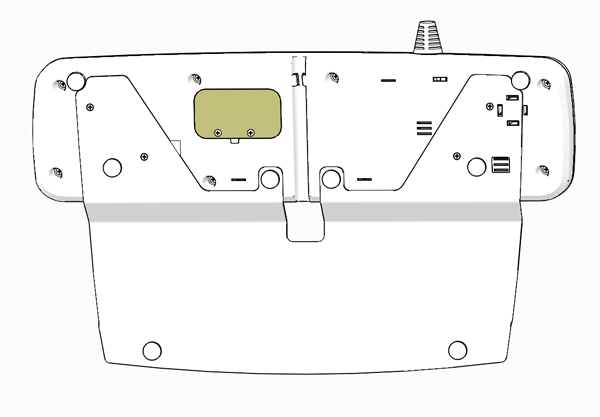
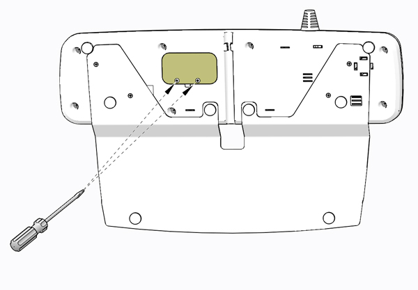
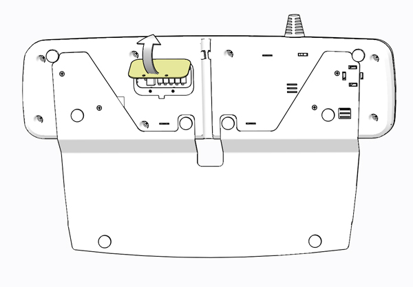
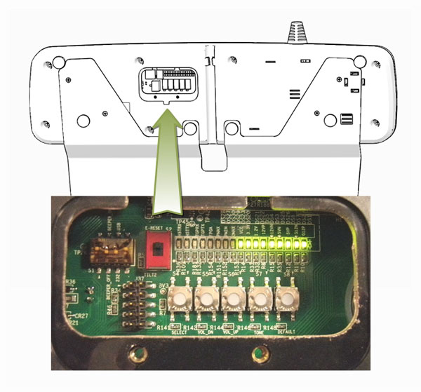
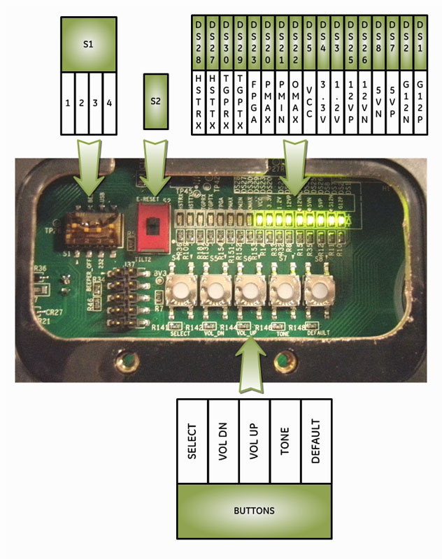

Operating Documentation
Direction 5193574-800, Rev# 22
Module Version 3.0, Version Date 1/28/14
Operating Documentation |
| ||||
| Potential for Shock | ||||
| Voltage may be present. | ||||
| Use proper PRECAUTION WHEN MAKING ADJUSTMENTS TO gscb, POWER ON CONDITION IS REQUIRED. uSE NONCONDUCTIVE TOOLS WHEN PRESSING OR SELECTING SWITCH SETTINGS. |
| ||||
| You must wear a grounded ESD wrist strap. Place removed electronic parts on or in an antistatic surface. | ||||
| ||||
| Follow ALL required safety and PPE procedures customary for your organization when working on this product. | ||||
| Condition | Reference | Effectivity |
|---|---|---|
Only trained service personnel should service the GE Scanner. | - | - |
To gain access to the GSCB Assembly’s configuration and adjustment switches, flip the GSCB assembly over to view the backside.
Illustration 2: GSCB Service Access Panel - Back side

Remove the two (2) Phillips screws holding the access panel in place and set aside.
Illustration 3: GSCB Service Access Panel Screw Removal

Flip the Service Access Panel up and set it aside to expose the GSCB configuration and setting switches.
Illustration 4: GSCB Service Access Panel Removal

Illustration 5: GSCB Service Access Panel Removed

The following instruction configure the GSCB for use with GOC6.6 VCT and NIO64 console.
Illustration 6: GSCB Switches and LEDs

Configure Switch 1 to the following positions.
Configure Switch 2 to the following position.
Reference the following Illustration:
Illustration 7: GSCB Switches and LEDs
| NOTE: | When adjusting the GSCB Intercom Volume Adjustments described below, please note: Service Mode:[TONE]
Volume Adjust: [VOL UP / VOL DN]
Default:[ DEFAULT]
|
Enter Service Mode and selecting Volume Adjustments ( PMAX, PMIN, or OMAX ):
Remove service window cover at the back of GSCB and press TONE button once to enter service mode.
Press SELECT button.
Patient Speaker Minimum Volume adjustment, PMIN LED on. Shall hear test tone in scan room coming from gantry speaker.
Select PMIN using SELECT button.
Press VOL UP key or VOL DN key to adjust minimum tone volume in scan room.
Adjust Patient Volume minimum level so that the tone is just heard above the room noise.
Patient Speaker Maximum Volume adjustment, PMAX LED on. Shall hear test tone in scan room coming from gantry speaker.
Select PMAX using SELECT button.
Press VOL UP key or VOL DN key to adjust maximum tone volume in scan room.
Adjust Patient Volume maximum level so that the tone is heard at a maximum undistorted level.
Operator Speaker Maximum Volume adjustment, OMAX LED on. Shall hear test tone in operator room coming from GSCB speaker.
Select OMAX using SELECT button.
Press VOL UP key or VOL DN key to adjust maximum tone volume in operator room.
Adjust Operator Speaker maximum volume level so that the tone is heard at a maximum undistorted level.
Exit Service Mode, Press TONE button.
Using the external volume controls (dials) on the GSCB:
Replace the GSCB Service Access Panel using the two (2) screws removed earlier.
Perform the Functional Checks → GSCB and ICOM Functional Checks instructions from the procedure list.
Perform the Functional Checks → System Scanning Test instructions from the procedure list.